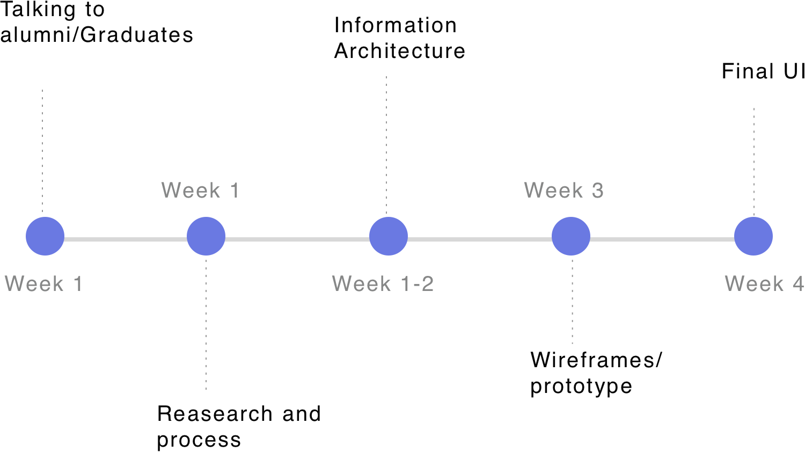
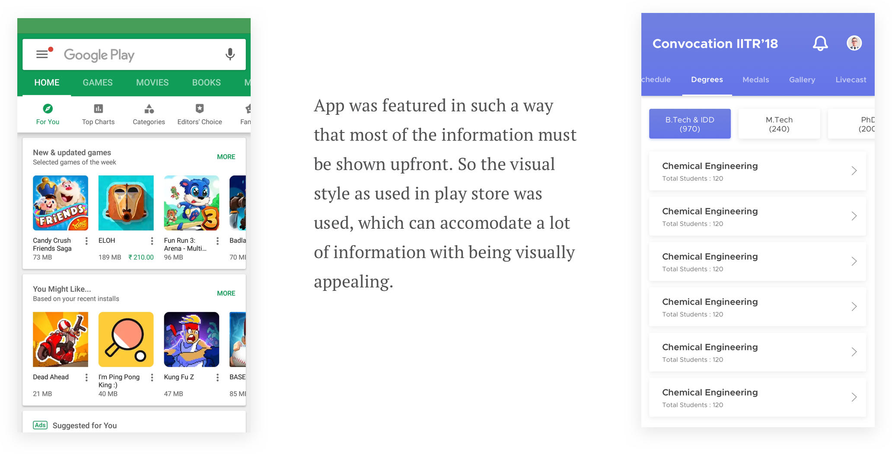

Convocation App IIT Roorkee
Convocation is the ceremony organised every year in a college to recognize the students that graduated the college/university and degree is given to the students by the chief guest. The event itself is a very big occasion and there are a lot of people involved. Management in such a big event can be a tough task if the process is not sorted properly. Also during the events the information about ongoing events is not properly spreaded and even if they use different platforms to do so.
Being one of the best technical institutes in India, it would be very good to have technology involved in such a process to minimize human load and ease the process of management. Also information should be accessible from one platform only. With this vision in mind, the idea of convocation app was developed.
Timeline(4 weeks)

Defining Target Audience
We started analysing the target audience keeping in mind that the product is also going to help college management. Target audience consist of previous year graduated students who can working or non- working in any kind of organisation.
Many of them went abroad for studying or doing job who may have some trouble in coming.
Research and Process
Started with the basic design principles and following the general problem solving trend we worked on this issue.
Stakeholder Interview : Working with the official people those who handle the institute is a different type of experience. Their focus remains on how their efforts can be reduced and work can be managed smoothly. But according to design principles the process nedds to be analysed and user needs have to be foccused.
So we decided to know what the stakeholders were thinking about the product and what do they expect from this. Their vision was clear, involvement of technology and improving management during convocation. They gave us a basic feature doc which they made by seeing others IIT’s apps.
After analysing the feature doc we made a hypothesis which needs to be checked. So we did some user research with the people those have attended previous convocations.
User Research - 1 : We approached our seniors those have attended the convocation recently and we tried to know about the whole process of the event, How its done and what were the pain points for them that can be solved this year.
Based on our study there 2 personas that can describe whole scenario.
Self Analysing & Deciding features: After the user research we worked on the main pain points of the users and tried to solve as many of them, keeping in mind about the stakeholders also. Subsequently we decided features based on the research.
-
The problem of accommodation can be solved if the institute can provide cloak room in every hostel.
-
If the person is not coming in the convocation they can fill a form and the degree can be couriered to him/her at the given address.
-
If a person can see his/her friend is coming or not after registering.
-
Time slot notification for branch wise degree distribution.
-
For making aware of schedule a proper list is given according to time and venue.
Visual Design

The colors were decided on the basis of college branding and curved typeface was used to give feel of smoothness in the app.
User Interface
App Stats
Summarizing
Working on a project which influences many people around you is a very great feeling. Seeing good results from that is even better and appreciation is the best thing to finish off the project. We got recognised by the college authorities and a platform for further technological advancements was set from it.